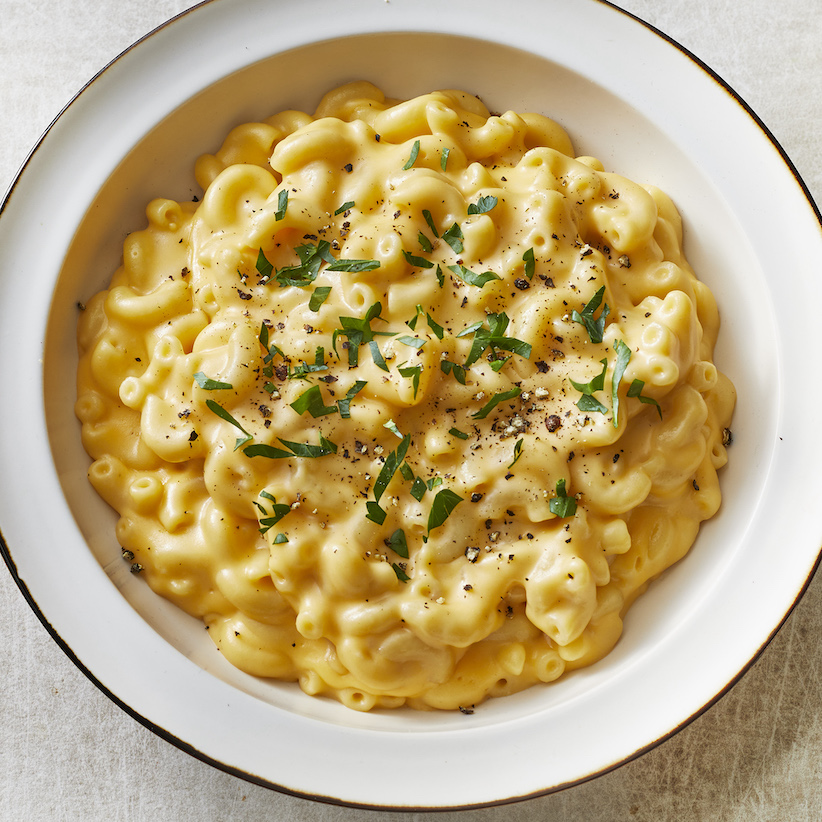

Macaroni and Cheese Recipe

Prep:10 mins
Cook:15 mins
Servings3
INGREDIENTS
- 3/4 (8 ounce) box elbow macroni
- 3 tablespoons butter
- 3 tablespoons all-purpose floor
- 3/8 tablespoon salt
- Ground black pepper to taste
- 1 1/2 cups shredded Cheddar cheese
- 1 1/2 cups milk
METHOD
- Bring a large pot of lightly salted water to a boil. Cook elbow macaroni in the boiling water, stirring occasionally until cooked through but firm to the bite, 8 minutes.
- At the same time, melt butter in a saucepan over medium heat. Add flour, salt, and pepper and stir until smooth, about 5 minutes. Pour in milk slowly, while stirring continuously. Continue to cook and stir until mixture is smooth and bubbling, about 5 minutes, making sure the milk doesn't burn.
- Add Cheddar cheese and stir until melted, 2 to 4 minutes.
- Drain macaroni and fold into cheese sauce until coated.
HOME